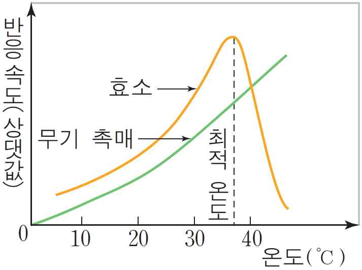

문제 4
단계 1
우리 몸에서 단백질은 효소나 호르몬 등의 성분으로서 물질대사나 생리 조절 작용, 신호전달, 세포내 항상성 유지에 매우 중요한 역할을 한다. 단백질을 구성하는 기본 단위에 대해 설명하시오.
단계 2
다음은 효소와 무기 촉매의 온도에 따른 반응속도를 비교한 그래프이다. 효소가 온도에 따른 그래프와 같은 반응 속도를 보인 이유를 설명하고, 효소의 반응속도에 영향을 미치는 온도 이외 요인에 대해 말해 보시오.

단계 3
우리 몸에서 단백질을 소화시킬 때 관여하는 효소와 분비 장소를 말하고 이러한 효소들의 반응속도에 가장 큰 영향을 미치는 요인에 대해 효소의 예에 대해 설명하시오.